For the Pork Patties: In a large bowl, combine ground pork, shallots, garlic, sugar, fish sauce, and pepper and mix well. Cover bowl and refrigerate mixture for at least 4 and up to 24 hours.
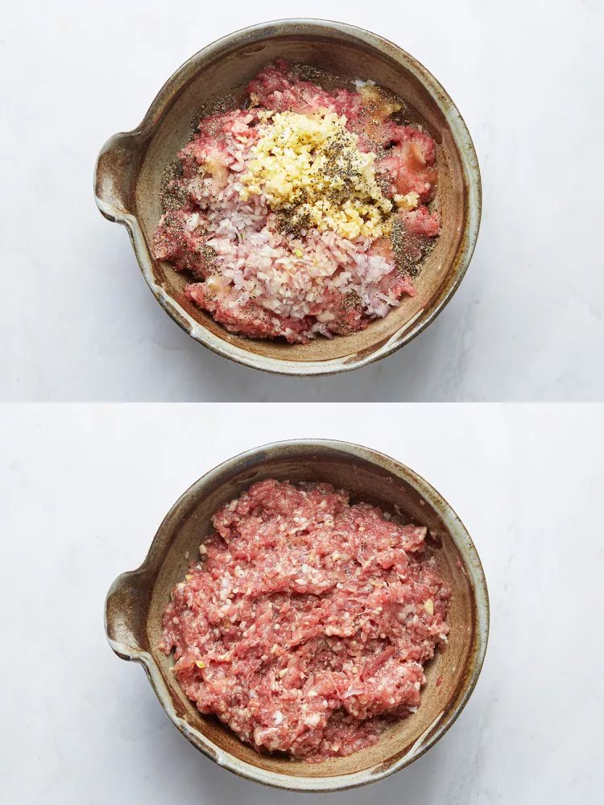For the Pork Belly: Using a very sharp knife, slice semi-frozen pork belly into 2-inch-long, 1/4-inch-thick slices.
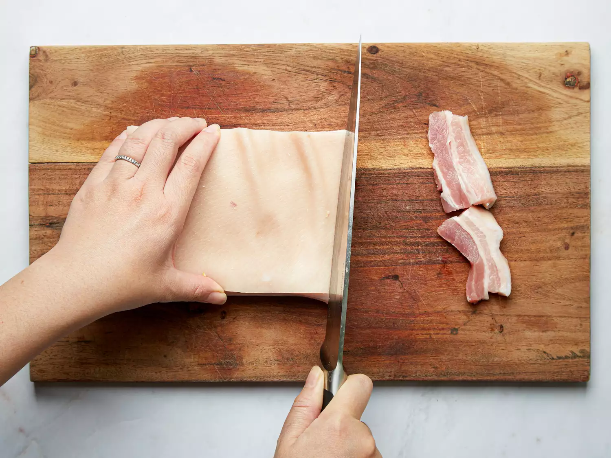In another large bowl, combine hot water and sugar and stir until sugar has dissolved. Add fish sauce, vegetable oil, scallions, shallot, garlic, and pepper and whisk to combine. Add pork belly slices and toss well to coat. Cover bowl and refrigerate for at least 4 and up to 24 hours.
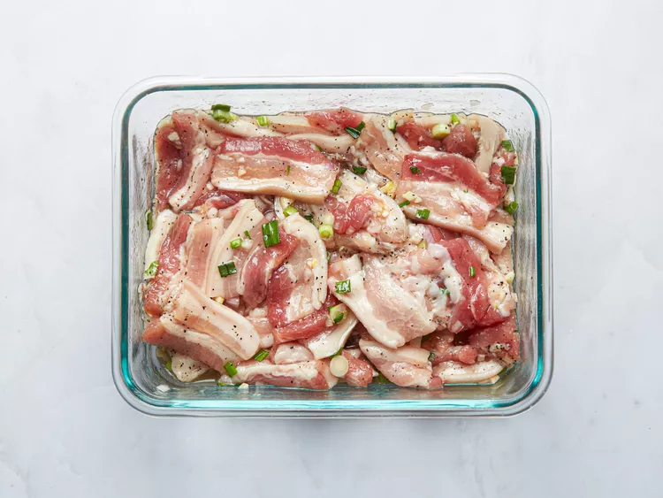For the Pickled Carrot and Kohlrabi: In small bowl, stir water, rice vinegar, and sugar until sugar has dissolved. Add sliced carrot and kohlrabi and let sit at room temperature until pickled, 2 hours.
For the Dipping Sauce: In a small saucepan, combine water, sugar, and fish sauce. Bring to a boil over medium-high heat, stirring until the sugar has dissolved, then boil for 5 minutes. Keep hot. (If making ahead of time, reheat before serving.)
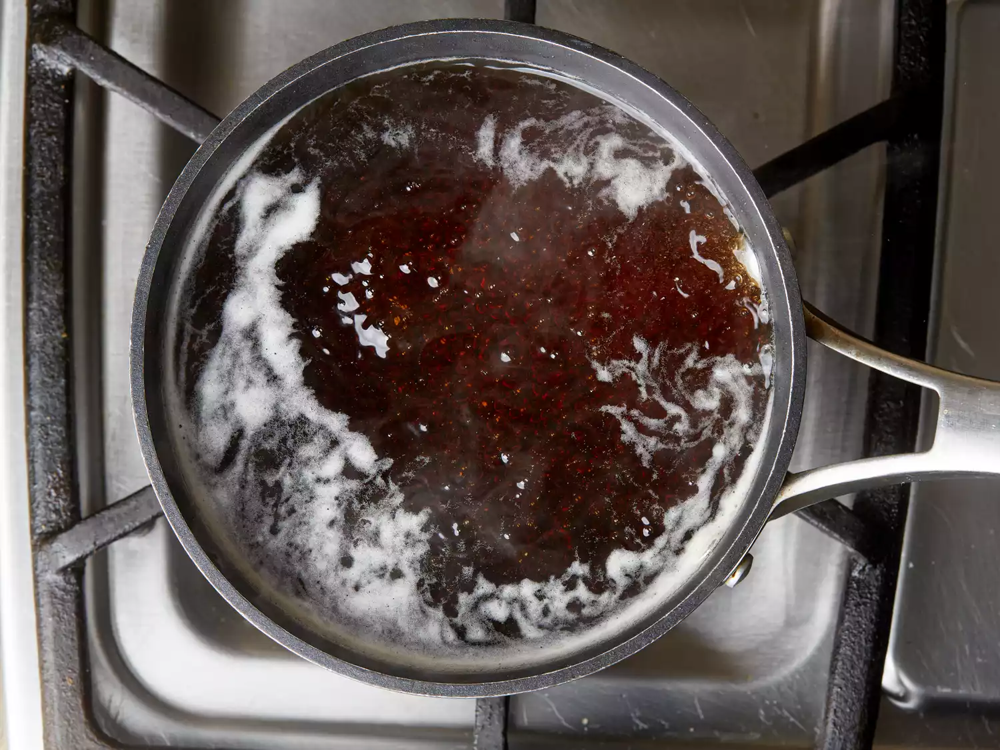To Grill the Meats: When ready to grill, remove pork mixture and pork belly from fridge. Weigh out about 2 ounces of pork mixture for each patty. Using oiled hands, form pork mixture into small patties, about 2 1/2 inches in diameter and 1/2 inch thick. Place formed patties on baking sheet lined with aluminum foil or parchment paper.
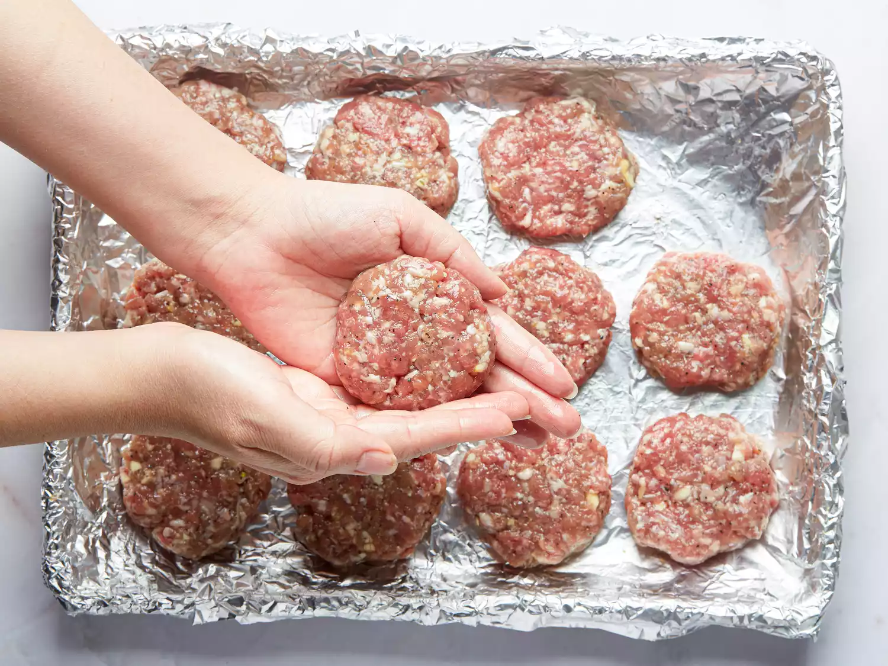Light 1 chimney full of charcoal. When all charcoal is lit and covered with gray ash, pour out and arrange coals on one side of grill. Set cooking grate in place, cover grill, and allow to preheat for 5 minutes. Alternatively, turn on all the burners of a gas grill to high, close grill, and preheat for 5 minutes. Clean and oil the grill grate.
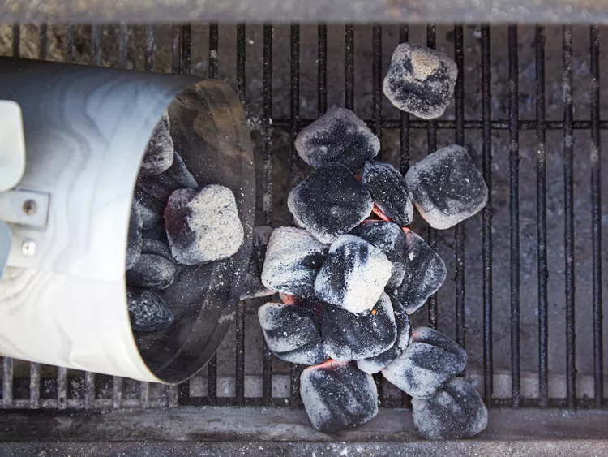Brush both sides of pork patties with vegetable oil. Transfer 6 pork patties to a metal grilling basket. Grill over direct heat, turning every minute, until cooked through and browned on the outside, about 8 minutes. Transfer cooked patties to a platter or baking sheet. Repeat with remaining pork patties. Keep warm.
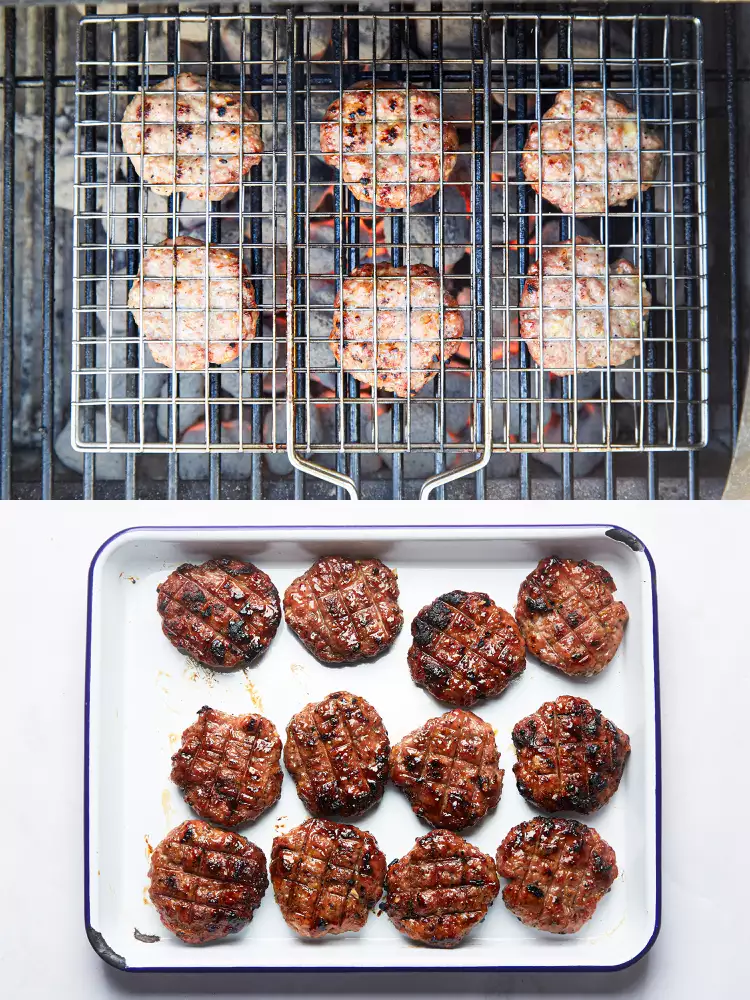Transfer pork belly slices to now-empty grilling basket. Grill over direct heat, turning every minute until cooked through and browned, 5 to 6 minutes. Transfer to the platter with the patties. Repeat with remaining pork belly slices. Keep warm.
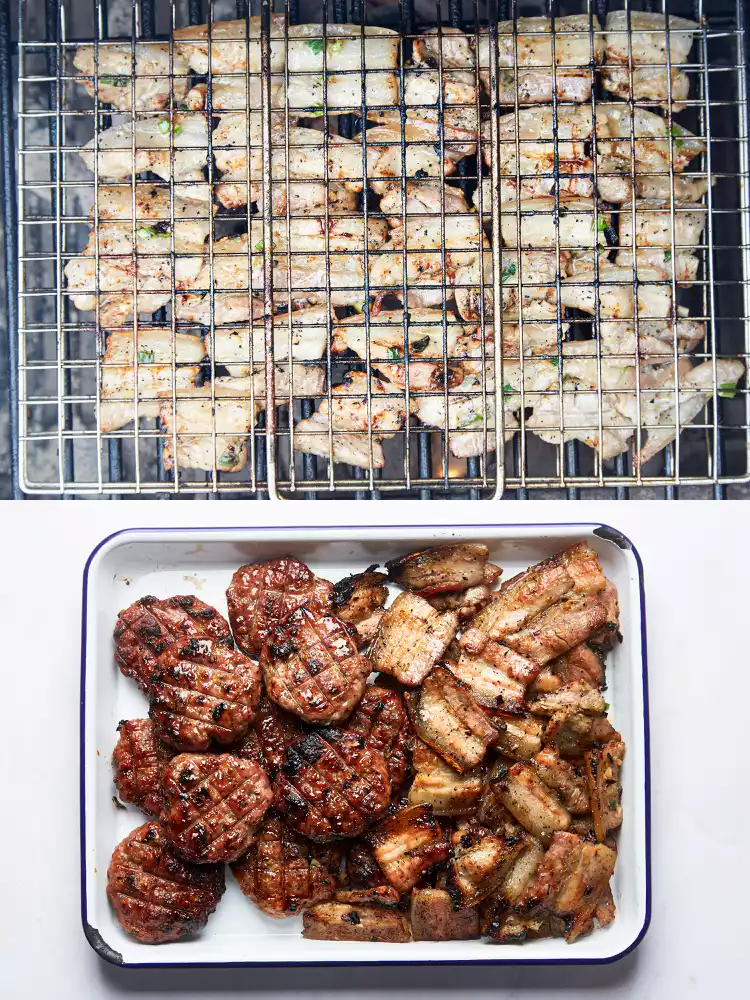For Serving: Cook the noodles according to the package instructions. Drain and run under cold water. Drain again and set aside.
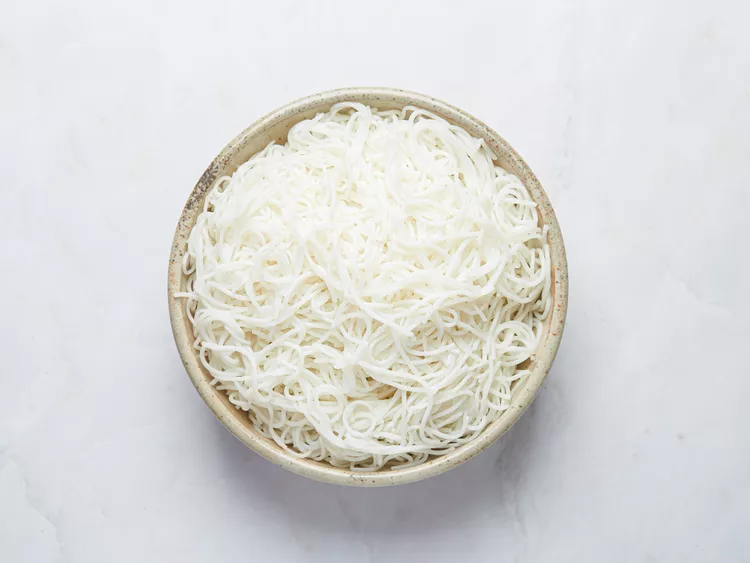Place the noodles, lettuce, and herbs on a platter. Place the garlic and sliced bird’s eye chiles in separate small bowls.
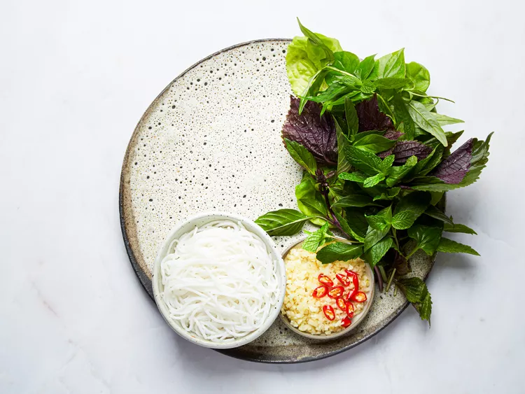Divide grilled pork patties and pork belly slices into 4 bowls. Add pickled vegetables. Ladle about 1 cup of hot dipping sauce into each bowl. Serve immediately with noodles, fresh herbs,raw garlic, and bird’s eye chiles alongside.
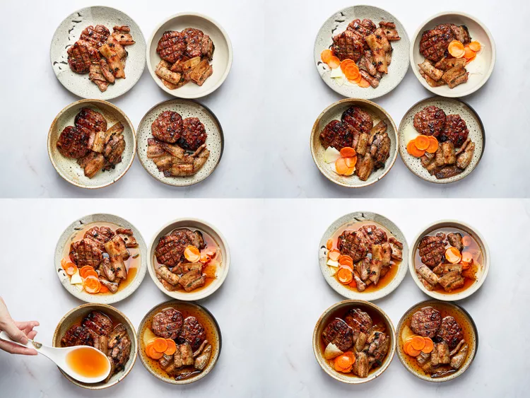